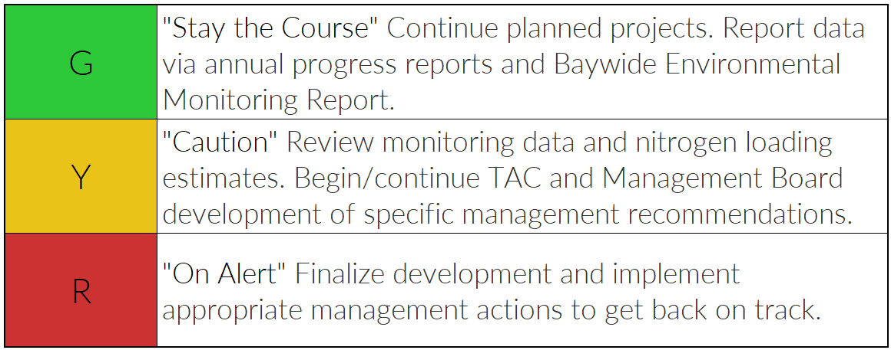

2019 Tampa Bay Water Quality Assessment
Background
Light availability to seagrass is the guiding paradigm for TBEP’s Nitrogen Management Strategy. Because excessive nitrogen loads to the bay generally lead to increased algae blooms (higher chlorophyll-a levels) (Figure 1) and reduce light penetration to seagrass, an evaluation method was developed to assess whether load reduction strategies are achieving desired water quality results (i.e. reduced chlorophyll-a concentrations and increased water clarity).

Figure 1: Guiding paradigm for Tampa Bay seagrass restoration through the management of nitrogen loads.
Decision Support Approach
Year to year algae abundance (measured as chlorophyll-a concentrations) and visible light penetration through the water column (depth of secchi disk visibility) have been identified as critical water quality indicators in Tampa Bay. Tracking the attainment of bay segment specific targets for these indicators provides the framework for developing and initiating bay management actions. TBEP management actions adopted in response to the annually-assessed decision support results are shown in Figure 2.

Figure 2: Management actions assigned to each bay segment.
2019 Decision Matrix Results
Water quality (chlorophyll-a and light penetration) remained supportive of seagrass in Hillsborough Bay (HB), Middle Tampa Bay (MTB), and Lower Tampa Bay (LTB)(Table 1, Figure 3). The nuisance alga, Pyrodinium bahamense, was again reported in Old Tampa Bay (OTB) during the Summer and Fall 2018, contributing to a small magnitude chlorophyll-a exceedance. In all bay segments, separate algal bloom events contributed to individual stations exceeding the bay segment chlorophyll-a targets (Figures 4, 5). However, effective light penetration was supportive of seagrass in all bay segments (Table 1).

Figure 3: Historic chlorophyll-a annual averages for the four bay segments.

Figure 4: Decision matrix results from 1975 to 2019.

Figure 5: Chlorophyll attainment outcomes by site for 2019.